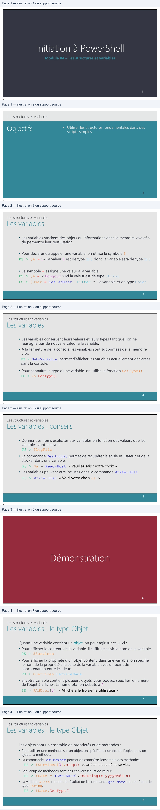
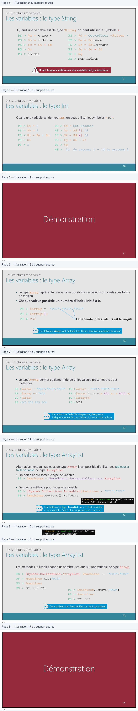
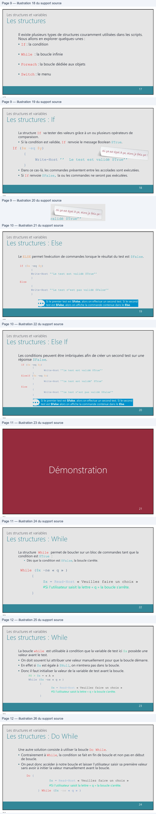
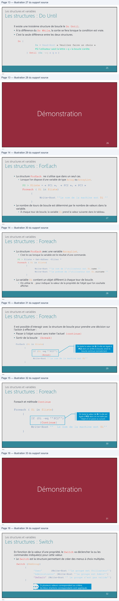
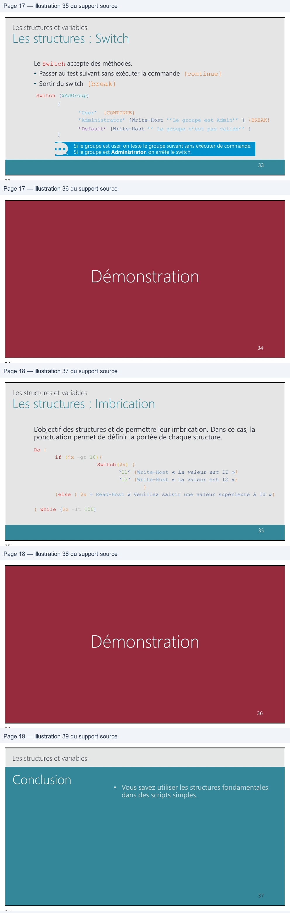

Transcription du document du Drive TSSR. La mise en forme est adaptée au Web ; les compléments IA du portail sont présentés séparément.
Module 04 – Les structures et variables
1
1
Les structures et variables
2
2
Les structures et variables
• Les variables stockent des objets ou informations dans la mémoire vive afin
de permettre leur réutilisation.
• Pour déclarer ou appeler une variable, on utilise le symbole $
PS > $A = 1« La valeur 1 est de type Int donc la variable sera de type Int
• Le symbole = assigne une valeur à la variable.
PS > $A = « Bonjour » Ici la valeur est de type String PS > $User = Get-AdUser –Filter * La variable et de type Objet
3
3
Les structures et variables
• Les variables conservent leurs valeurs et leurs types tant que l’on ne
réassigne pas de nouvelle valeur à la variable.
• À la fermeture de la console, les variables sont supprimées de la mémoire
vive.
PS > Get-Variable permet d’afficher les variables actuellement déclarées dans la console.
• Pour connaître le type d’une variable, on utilise la fonction GetType()
PS > $A.GetType()
4
4
Les structures et variables
• Donner des noms explicites aux variables en fonction des valeurs que les
variables vont recevoir.
PS > $LogFile
• La commande Read-Host permet de récupérer la saisie utilisateur et de la stocker dans une variable.
PS > $a = Read-Host « Veuillez saisir votre choix »
• Les variables peuvent être incluses dans la commande Write-Host.
PS > Write-Host « Voici votre choix $a »
5
5
6
6
Les structures et variables
Quand une variable contient un objet, on peut agir sur celui-ci :
• Pour afficher le contenu de la variable, il suffit de saisir le nom de la variable.
PS > $Services
• Pour afficher la propriété d’un objet contenu dans une variable, on spécifie
le nom de la propriété à la suite de la variable avec un point de
concaténation entre les deux.
PS > $Services.ServiceName
• Si votre variable contient plusieurs objets, vous pouvez spécifier le numéro de l’objet à afficher. La numérotation débute à 0.
PS > $AdUser[2] « Affichera le troisième utilisateur »
7
7
Les structures et variables
Les objets sont un ensemble de propriétés et de méthodes :
• Pour utiliser une méthode sur un objet, on spécifie le numéro de l’objet, puis on ajoute la méthode. • La commande Get-Member permet de connaître l’ensemble des méthodes.
PS > $Services[3].stop() va arrêter le quatrième service.
• Beaucoup de méthodes sont des convertisseurs de valeur.
PS > $Date = (Get-Date).ToString(« yyyyMMdd »)
• La variable $Date contient le résultat de la commande get-date tout en étant de type String.
PS > $Date.GetType()
8
8

Les structures et variables
Quand une variable est de type String, on peut utiliser le symbole +.
PS > $a = « abc » PS > $b = « def » PS > $c = $a + $b PS > $c PS > abcdef
PS > $d = Get-AdUser –Filter * PS > $e = $d.Name PS > $f = $d.Surname PS > $g = $e + $f PS > $g PS > Nom Prénom
Il faut toujours additionner des variables de type identique.
9
9
Les structures et variables
Quand une variable est de type Int, on peut utiliser les symboles + et -.
PS > $a = 1
PS > $d = Get-Process
PS > $b = 2
PS > $e = $d[1].Id
PS > $c = $a + $b
PS > $f = $d[2].Id
PS > $c
PS > $g = $e - $f
PS > 3
PS > $g
PS > id du process 1 - id du process 2
10
10
11
11
Les structures et variables
• Le type Array représente une variable qui stocke ses valeurs ou objets sous forme de tableau. • Chaque valeur possède un numéro d’index initié à 0.
PS > $array = "PC1","PC2","PC3"
PS > $array[1] PS > PC2 Le séparateur des valeurs est la virgule
Les tableaux Array sont de taille fixe. On ne peut pas supprimer de valeur.
12
12
Les structures et variables
• Le type Array permet également de gérer les valeurs présentes avec des méthodes.
PS >$array = "PC1","PC2","PC3"
PS >$array = "PC1","PC2","PC3"
PS >$array += "PC4
PS >$array.Replace(« PC1 », « PC11 »)
PS >$array
PS >$array[0]
PS >PC1 PC2 PC3 PC4
PS >PC11
La section de l’aide Get-Help about_Array vous
indiquera toutes les possibilités d’une variable tableau.
13
13
Les structures et variables
Alternativement aux tableaux de type Array, il est possible d’utiliser des tableaux à taille variable, de type ArrayList :
• On doit d’abord forcer le type de variable.
PS > $machines = New-Object System.Collections.ArrayList
• Deuxième méthode pour typer une variable.
PS > [System.Collections.ArrayList]$machines = "PC1","PC2"
PS > $machines.Gettype().FullName
Les tableaux de type ArrayList ont une taille variable,
ce qui simplifie l’ajout et la suppression de contenu.
14
14
[
]
->
GetType()
.fullname
System.Collections.ArrayList
D
Les structures et variables
Les méthodes utilisables sont plus nombreuses que sur une variable de type Array.
PS > [System.Collections.ArrayList] $machines = "PC1","PC2"
PS > $machines.Add("PC3")
PS > $machines
PS > PC1 PC2 PC3
PS > $machines.Remove("PC2")
PS > $machines
PS > PC1 PC3
Ces variables vont être dédiées au stockage d’objet.
15
15
16
16

Les structures et variables
Il existe plusieurs types de structures couramment utilisées dans les scripts. Nous allons en explorer quelques-unes : • If : la condition
• While : la boucle infinie
• Foreach : la boucle dédiée aux objets
• Switch : le menu
17
17
Les structures et variables
La structure If va tester des valeurs grâce à un ou plusieurs opérateurs de comparaison. • Si la condition est validée, If renvoie le message Boolean $True.
If ($x –eq $y)
{
Write-Host ’’ Le test est validé $True’’ }
• Dans ce cas-là, les commandes présentent entre les accolades sont exécutées. • Si If renvoie $False, la ou les commandes ne seront pas exécutées.
18
18
Si ça est égal à ça, Alors je fais eq!
‘ii,
Les structures et variables
Le ELSE permet l’exécution de commandes lorsque le résultat du test est $False.
If ($x –eq $y)
{
Write-Host ’’Le test est validé $True’’
}
Else
{
Write-Host ’’Le test n’est pas validé $False’’
}
Si le premier test est $False, alors on effectue un second test. Si le second
test est $False, alors on affiche la commande contenue dans le Else.
19
19
Les structures et variables
Les conditions peuvent être imbriquées afin de créer un second test sur une réponse $False.
If ($x –eq $y)
{
Write-Host ’’Le test est validé $True’’ } ElseIf ($x –eq $z)
{
Write-Host ’’Le test est validé’ $True’ } Else
{
Write-Host ’’Le test n’est pas validé $False’’ }
Si le premier test est $False, alors on effectue un second test. Si le second
test est $False alors on affiche la commande contenue dans le Else.
20
20
21
21
Les structures et variables
La structure While permet de boucler sur un bloc de commandes tant que la condition est $True :
• Dès que la condition est $False, la boucle s’arrête.
While ($x –ne « q » )
{
$x = Read-Host « Veuillez faire un choix »
#Si l’utilisateur saisit la lettre « q » la boucle s’arrête. }
22
22
Les structures et variables
La boucle while est utilisable à condition que la variable de test ici $x possède une valeur avant le test.
• On doit souvent lui attribuer une valeur manuellement pour que la boucle démarre. • En effet si $x est égale à $Null, on n’entrera pas dans la boucle.
• Donc il faut initialiser la valeur de la variable de test avant la boucle.
PS > $x = « A » While ($x –ne « q » )
{
$x = Read-Host « Veuillez faire un choix » #Si l’utilisateur saisit la lettre « q » la boucle s’arrête. }
23
23
Les structures et variables
Une autre solution consiste à utiliser la boucle Do While.
• Contrairement à While, la condition se fait en fin de boucle et non pas en début de boucle.
• On peut donc accéder à notre boucle et laisser l’utilisateur saisir sa première valeur
sans avoir à initier la valeur manuellement avant la boucle.
Do {
$x = Read-Host « Veuillez faire un choix »
#Si l’utilisateur saisit la lettre « q » la boucle s’arrête.
} While ($x –ne « q » )
24
24

Les structures et variables
Il existe une troisième structure de boucle le Do Until.
• À la différence du Do While, la sortie se fera lorsque la condition est vraie.
• C’est la seule différence entre les deux structures.
Do {
$x = Read-Host « Veuillez faire un choix »
#Si l’utilisateur saisit la lettre « q » la boucle s’arrête.
} Until ($x –eq « q » )
25
25
26
26
Les structures et variables
• La structure ForEach ne s’utilise que dans un seul cas. • Lorsque l’on dispose d’une variable de type Array ou ArrayList.
PS > $liste = « PC1 », « PC2 », « PC3 »
Foreach ( $i in $liste)
{
Write-Host ’’Le nom de la machine est $i ’’
}
• Le nombre de tours de boucle est déterminé par le nombre de valeurs dans la
variable.
• À chaque tour de boucle, la variable $i prend la valeur suivante dans le tableau.
27
27
Les structures et variables
• La structure ForEach avec une variable Arraylist. • C’est le cas lorsque la variable est le résultat d’une commande.
PS > $liste = Get-AdUser –Filter * Foreach ( $i in $liste)
{
Write-Host ’’Le nom de l’utilisateur est $i.name ’’ Write-Host ’’Le prénom de l’utilisateur est $i.surname ’’ }
• La variable $i contient un objet différent à chaque tour de boucle. • On utilise le . pour indiquer la valeur de la propriété de l’objet que l’on souhaite afficher.
28
28
Les structures et variables
Il est possible d’interagir avec la structure de boucle pour prendre une décision sur
l’action à effectuer :
• Passer à l’objet suivant sans traiter l’actuel {continue}
• Sortir de la boucle
{break}
ForEach ($i in $liste)
On teste la valeur de $i. Si elle est égale à
{
PC2 alors on arrête la boucle, sinon la
boucle continue normalement.
If ($i –eq ’’PC2’’)
{Break}
Write-Host ’’ Le nom de la machine est $i’’
}
29
29
Les structures et variables
Foreach et méthode Continue
Foreach ( $i in $liste)
{
On teste la valeur de $i. Si elle est
égale à PC2 alors on ne traite pas
If ($i –eq ’’PC2’’)
l’objet et on passe au suivant.
{Continue}
Write-Host ’’
Le nom de la machine est $i’’
}
30
30
31
31
Les structures et variables
En fonction de la valeur d’une propriété, le Switch va déclencher la ou les commandes indiquée(s) pour cette valeur. • Le Switch est la structure permettant de créer des menus à choix multiples.
Switch ($AdGroup)
{
’User’
{Write-Host ’’Le groupe est Utilisateur’’}
’Administrator’ {Write-Host ’’Le groupe est Admin’’}
’Default’ {Write-Host ’’ Le groupe n’est pas valide’’}
}
Si plusieurs valeurs correspondent au critère,
les blocs d’actions correspondants sont appliqués
32
32

Les structures et variables
Le Switch accepte des méthodes.
• Passer au test suivant sans exécuter la commande {continue}
• Sortir du switch {break}
Switch ($AdGroup)
{
’User’ {CONTINUE}
’Administrator’ {Write-Host ’’Le groupe est Admin’’ } {BREAK}
’Default’ {Write-Host ’’ Le groupe n’est pas valide’’ }
}
Si le groupe est user, on teste le groupe suivant sans exécuter de commande.
Si le groupe est Administrator, on arrête le switch.
33
33
34
34
Les structures et variables
L’objectif des structures et de permettre leur imbrication. Dans ce cas, la
ponctuation permet de définir la portée de chaque structure.
Do {
if ($x -gt 10){
Switch($x) {
‘11’ {Write-Host « La valeur est 11 »}
‘12’ {Write-Host « La valeur est 12 »}
}
}else { $x = Read-Host « Veuillez saisir une valeur supérieure à 10 »}
} while ($x –lt 100)
35
35
36
36
Les structures et variables
• Vous savez utiliser les structures fondamentales
dans des scripts simples.
37
37
